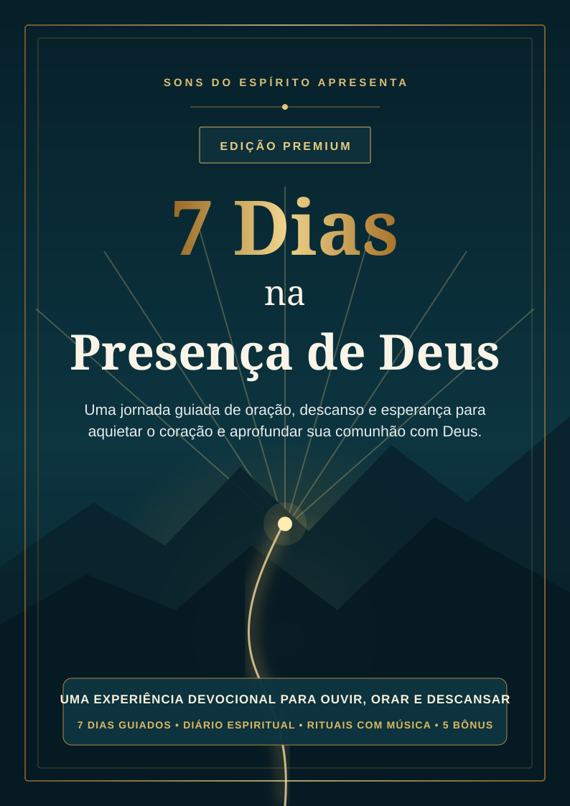

Cansaço interior
Você quer buscar a Deus, mas chega ao fim do dia sem energia.
Devocional cristão • Edição Premium
Uma jornada guiada para quem se sente cansado, distante ou sem palavras para orar — criada para ser vivida junto às músicas do Sons do Espírito.
Acesso digital imediato • Pagamento único • Garantia de 7 dias

Talvez você esteja vivendo isso
A mente não desacelera. A oração parece repetitiva. O silêncio dá a impressão de distância. E até separar alguns minutos começa a parecer difícil.
Você quer buscar a Deus, mas chega ao fim do dia sem energia.
Você começa a orar e não sabe como continuar com sinceridade.
A demora das respostas faz o coração duvidar do caminho.
Você não precisa começar com uma mudança enorme. Precisa apenas de um caminho simples para voltar.
Uma experiência, não apenas leitura
O material conduz você por uma sequência leve: ouvir, perceber, refletir, conversar com Deus e transformar a leitura em um passo possível.
Texto bíblico
Uma verdade central para orientar o encontro.
Reflexão acolhedora
Linguagem simples, profunda e livre de culpa.
Prática guiada
Respiração, entrega, memória e pequenos passos.
Oração e diário
Palavras para começar e espaço para sua história.
O diferencial do Sons do Espírito
Use as músicas do canal como ambiente para a leitura, a escrita e a oração. Assim, o devocional se torna uma experiência completa — e não apenas mais um arquivo salvo no celular.
Sua jornada de sete dias
Cada dia trabalha uma necessidade real do coração.
Perceber a presença mesmo quando as emoções silenciam.
Separar responsabilidade daquilo que você não controla.
Aprender a esperar sem esconder perguntas sinceras.
Receber descanso sem culpa e respeitar seus limites.
Lembrar a fidelidade passada e acolher o hoje.
Dar o próximo passo e reconhecer seu círculo de apoio.
Construir um hábito espiritual possível para continuar.
Incluídos na edição premium
Ferramentas práticas dentro do próprio PDF — sem arquivos soltos ou complicação.
Ansiedade, insônia, solidão, decisões, desânimo, perdão e gratidão.
Leituras e práticas para consolidar o hábito durante 21 dias.
Frases essenciais para fotografar, recortar ou deixar à vista.
Uma sequência simples para quando você não sabe como começar.
Rituais da manhã e da noite, perguntas para a alma e mapa pessoal de paz.
Todo retorno sincero também é um ato de fé.
Você não precisa viver sete dias perfeitos. Só precisa se permitir recomeçar.
Condição especial
Você já encontra paz nas músicas do canal. Agora pode transformar esses momentos em uma jornada guiada de leitura, oração, reflexão e escrita.
CONDIÇÃO PARA A COMUNIDADE
pagamento único • acesso vitalício
Quero começar agora🔒 Compra processada com segurança pela Hotmart
Conheça o material. Caso não faça sentido para você, solicite o reembolso dentro do prazo da plataforma.
Perguntas frequentes
Após a confirmação do pagamento, a Hotmart envia as instruções de acesso para o seu e-mail.
Em média, de 15 a 20 minutos. Você também pode seguir no seu próprio ritmo.
Não. O material funciona sozinho. As músicas do canal são uma forma opcional de tornar o momento ainda mais acolhedor.
Sim. O material é entregue em PDF e pode ser lido no celular, computador ou impresso em A4.
É um devocional cristão baseado em referências bíblicas, com linguagem acolhedora e acessível.
O acesso é pessoal. O arquivo não pode ser distribuído, republicado ou revendido.
Você pode solicitar o reembolso dentro do prazo de 7 dias, conforme as regras da Hotmart.
Separe alguns minutos. Respire. Recomece.
Quero meu devocional